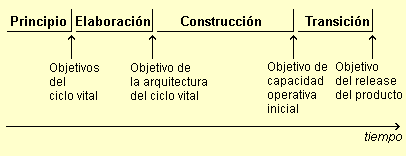

| Concepto: Evaluación de la calidad |
 |
|
| Elementos relacionados |
|---|
|
Durante todo el ciclo vital del producto, para gestionar la calidad, se llevan a cabo mediciones y valoraciones del proceso y la calidad del producto. La evaluación de la calidad puede darse cuando se produce un suceso importante, como el final de una fase, o cuando se crea un producto de trabajo, como un ensayo de código. A continuación se describen las distintas evaluaciones que se dan durante el ciclo vital. Objetivos y valoraciones de estadoCada fase e iteración de Rational Unified Process (RUP) tiene como resultado el release (interno o externo) de un producto ejecutable o de un subconjunto del producto final que se está desarrollando, y en ese momento se realizan valoraciones con las finalidades siguientes:
Los objetivos principales se producen al final de cada una de las cuatro fases de RUP y verifican que los objetivos de la fase se han alcanzado. Hay cuatro objetivos principales: 
Los objetivos menores se producen al final de cada iteración y se centran en la verificación de que los objetivos de la iteración se han alcanzado. Las valoraciones de estado son esfuerzos periódicos realizados para valorar el progreso continuo a lo largo de una iteración o fase. Ver también:
Inspecciones, revisiones y ensayosLas inspecciones, revisiones y ensayos son técnicas específicas que se centran en la evaluación de los productos de trabajo y son un sólido método para mejorar la calidad y la productividad del proceso de desarrollo. De deben llevar a cabo en un formato de reunión, con un rol haciendo de facilitador, y un segundo rol tomando notas (cambio de solicitudes, problemas, preguntas, etc.). El glosario del estándar IEEE (edición de 1990) define estos tres tipos de esfuerzos como:
Consulte Directriz: Revisiones para obtener información adicional sobre la realización de inspecciones, revisiones y ensayos. |
© Copyright IBM Corp. 1987, 2006. Reservados todos los derechos. |